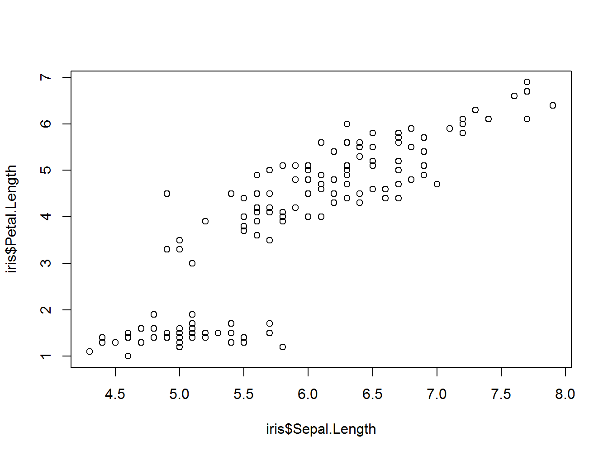
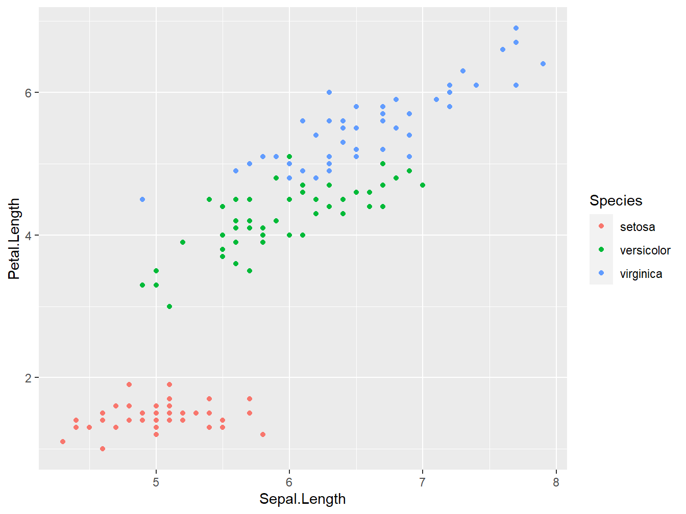

ch: 2 図
2.1 図
- 図の名前の指定
(ref:irisplot) 図のタイトル
plot(iris$Sepal.Length, iris$Petal.Length)

Figure 2.1: 図のタイトル
ggplot(iris) +
geom_point(aes(Sepal.Length, Petal.Length, color = Species))

Figure 2.2: ggplot
図が出ない(T_T)
→解決！
- 考えられる理由
-
bookdown.yml中のbook_filename:のところの名前に日本語を使っていたため。これはコード実行して作成される図のファイルが入る_bookdown_filesの中のフォルダ名になるようで，日本語だとパスが読めずこの図が表示されない事が起こる。 - そもそも
docsフォルダ内にbook_filename:で指定される名前のフォルダが自動作成されるみたいで，日本語だとこれ自体が作成されなかった
-